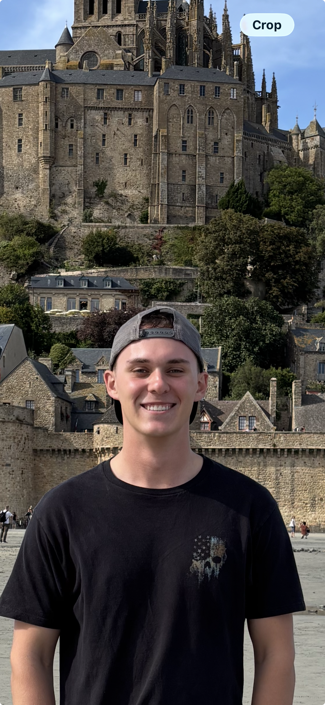
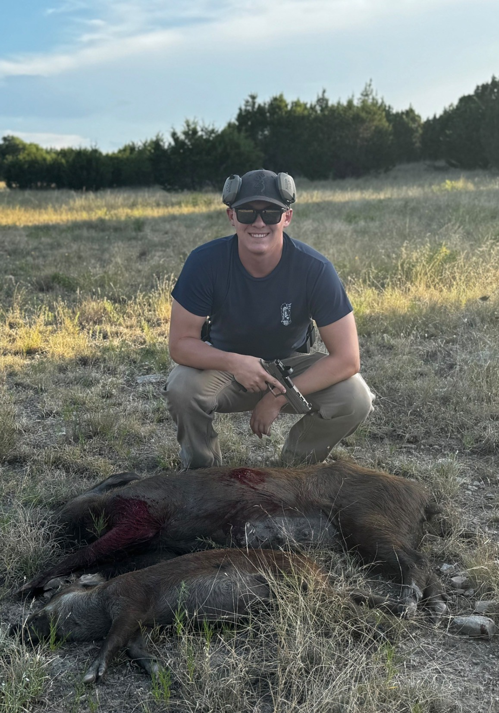
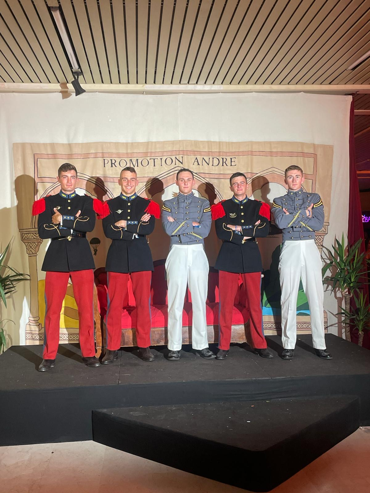

About Me
21 · Cadet, United States Military Academy at West Point · Mathematics
I'm a 21-year-old cadet at West Point studying mathematics. When I'm not buried in a problem set, I'm usually outside — bowhunting whitetail from a treestand at first light, chasing powder on skis, paddling out for a surf session, or dropping below the surface on a scuba dive. There's a similar kind of patience and attention to detail in both worlds: reading a ridgeline for sign isn't so different from reading a proof for the step you missed.
Interests
- Hunting — bowhunting and rifle, mostly whitetail
- Skiing
- Surfing
- Scuba diving
- Mathematics — see my Math Projects page
Gallery



